Using GXBeam with DifferentialEquations.jl
While the capabilities provided by GXBeam are probably sufficient for most users, advanced users may wish to make use of some of the features of the DifferentialEquations package. For this reason, we have created an interface in GXBeam to allow users to model the differential algebraic equations encountered in GXBeam in DifferentialEquations.
Interface Functions
The following constructors are available for modeling the differential algebraic equations from GXBeam in DifferentialEquations.
SciMLBase.ODEFunction — MethodODEFunction(system::GXBeam.System, assembly)Construct a ODEFunction for the system of nonlinear beams contained in assembly which may be used with the DifferentialEquations package.
The parameters associated with the resulting ODEFunction are defined by the tuple (prescribed_conditions, distributed_loads, origin, linear_velocity, angular_velocity) where each parameter is defined as follows:
prescribed_conditions: A dictionary with keys corresponding to the points at which prescribed conditions are applied and elements of typePrescribedConditionswhich describe the prescribed conditions at those points. If time varying, this input may be provided as a function of time.distributed_loads: A dictionary with keys corresponding to the elements to which distributed loads are applied and elements of typeDistributedLoadswhich describe the distributed loads at those points. If time varying, this input may be provided as a function of time.origin: Global frame origin vector. If time varying, this input may be provided as a function of time.linear_velocity: Global frame linear velocity vector. If time varying, this vector may be provided as a function of time.angular_velocity: Global frame angular velocity vector. If time varying, this vector may be provided as a function of time.
SciMLBase.ODEProblem — MethodODEProblem(system::GXBeam.System, assembly, tspan; kwargs...)Construct a ODEProblem for the system of nonlinear beams contained in assembly which may be used with the DifferentialEquations package.
Keyword Arguments:
prescribed_conditions = Dict{Int,PrescribedConditions{Float64}}(): A dictionary with keys corresponding to the points at which prescribed conditions are applied and elements of typePrescribedConditionswhich describe the prescribed conditions at those points. If time varying, this input may be provided as a function of time.distributed_loads = Dict{Int,DistributedLoads{Float64}}(): A dictionary with keys corresponding to the elements to which distributed loads are applied and elements of typeDistributedLoadswhich describe the distributed loads at those points. If time varying, this input may be provided as a function of time.origin = zeros(3): Global frame origin vector. If time varying, this input may be provided as a function of time.linear_velocity = zeros(3): Global frame linear velocity vector. If time varying, this vector may be provided as a function of time.angular_velocity = zeros(3): Global frame angular velocity vector. If time varying, this vector may be provided as a function of time.
SciMLBase.DAEFunction — MethodDAEFunction(system::GXBeam.System, assembly)Construct a DAEFunction for the system of nonlinear beams contained in assembly which may be used with the DifferentialEquations package.
The parameters associated with the resulting DiffEqBase.DAEFunction are defined by the tuple (prescribed_conditions, distributed_loads, origin, linear_velocity, angular_velocity) where each parameter is defined as follows:
prescribed_conditions: A dictionary with keys corresponding to the points at which prescribed conditions are applied and elements of typePrescribedConditionswhich describe the prescribed conditions at those points. If time varying, this input may be provided as a function of time.distributed_loads: A dictionary with keys corresponding to the elements to which distributed loads are applied and elements of typeDistributedLoadswhich describe the distributed loads at those points. If time varying, this input may be provided as a function of time.origin: Global frame origin vector. If time varying, this input may be provided as a function of time.linear_velocity: Global frame linear velocity vector. If time varying, this vector may be provided as a function of time.angular_velocity: Global frame angular velocity vector. If time varying, this vector may be provided as a function of time.
SciMLBase.DAEProblem — MethodDAEProblem(system::GXBeam.System, assembly, tspan; kwargs...)Construct a DAEProblem for the system of nonlinear beams contained in assembly which may be used with the DifferentialEquations package.
A consistent set of initial conditions may be obtained prior to constructing the DAEProblem using initial_condition_analysis! or by constructing a DAEProblem after a time domain analysis.
Keyword Arguments:
prescribed_conditions = Dict{Int,PrescribedConditions{Float64}}(): A dictionary with keys corresponding to the points at which prescribed conditions are applied and elements of typePrescribedConditionswhich describe the prescribed conditions at those points. If time varying, this input may be provided as a function of time.distributed_loads = Dict{Int,DistributedLoads{Float64}}(): A dictionary with keys corresponding to the elements to which distributed loads are applied and elements of typeDistributedLoadswhich describe the distributed loads at those points. If time varying, this input may be provided as a function of time.origin = zeros(3): Global frame origin vector. If time varying, this input may be provided as a function of time.linear_velocity = zeros(3): Global frame linear velocity vector. If time varying, this vector may be provided as a function of time.angular_velocity = zeros(3): Global frame angular velocity vector. If time varying, this vector may be provided as a function of time.
Example Usage
For this example we demonstrate how to solve the Nonlinear Dynamic Analysis of a Wind Turbine Blade problem using DifferentialEquations.
We start by setting up the problem as if we were solving the problem using GXBeam's internal solver.
using GXBeam, LinearAlgebra
L = 60 # m
# create points
nelem = 10
x = range(0, L, length=nelem+1)
y = zero(x)
z = zero(x)
points = [[x[i],y[i],z[i]] for i = 1:length(x)]
# index of endpoints of each beam element
start = 1:nelem
stop = 2:nelem+1
# stiffness matrix for each beam element
stiffness = fill(
[2.389e9 1.524e6 6.734e6 -3.382e7 -2.627e7 -4.736e8
1.524e6 4.334e8 -3.741e6 -2.935e5 1.527e7 3.835e5
6.734e6 -3.741e6 2.743e7 -4.592e5 -6.869e5 -4.742e6
-3.382e7 -2.935e5 -4.592e5 2.167e7 -6.279e5 1.430e6
-2.627e7 1.527e7 -6.869e5 -6.279e5 1.970e7 1.209e7
-4.736e8 3.835e5 -4.742e6 1.430e6 1.209e7 4.406e8],
nelem)
# mass matrix for each beam element
mass = fill(
[258.053 0.0 0.0 0.0 7.07839 -71.6871
0.0 258.053 0.0 -7.07839 0.0 0.0
0.0 0.0 258.053 71.6871 0.0 0.0
0.0 -7.07839 71.6871 48.59 0.0 0.0
7.07839 0.0 0.0 0.0 2.172 0.0
-71.6871 0.0 0.0 0.0 0.0 46.418],
nelem)
# create assembly of interconnected nonlinear beams
assembly = Assembly(points, start, stop; stiffness=stiffness, mass=mass)
# prescribed conditions
prescribed_conditions = (t) -> begin
Dict(
# fixed left side
1 => PrescribedConditions(ux=0, uy=0, uz=0, theta_x=0, theta_y=0, theta_z=0),
# force on right side
nelem+1 => PrescribedConditions(Fz = 1e5*sin(20*t))
)
endAt this point if we wanted to use GXBeam's internal solver, we would choose a time discretization and call the time_domain_analysis function.
# simulation time
t = 0:0.001:2.0
system, gxbeam_history, converged = time_domain_analysis(assembly, t;
prescribed_conditions = prescribed_conditions)To instead use the capabilities of the DifferentialEquations package we can do the following.
using DifferentialEquations
# define simulation time
tspan = (0.0, 2.0)
# run initial condition analysis to get consistent set of initial conditions
system, converged = initial_condition_analysis(assembly, tspan[1]; prescribed_conditions)
# construct DAE as ODEProblem with non-constant mass matrix
prob = ODEProblem(system, assembly, tspan; prescribed_conditions)
# solve ODEProblem
sol = solve(prob, Rodas4())We can extract the outputs from the solution in a easy to understand format using the AssemblyState constructor.
diffeq_history = [AssemblyState(system, assembly, sol[it]; prescribed_conditions)
for it in eachindex(sol)]Let's now compare the solutions from GXBeam's internal solver and the Rodas4 solver from DifferentialEquations.
using Plots
pyplot()
point = vcat(fill(nelem+1, 6), fill(1, 6))
field = [:u, :u, :u, :theta, :theta, :theta, :F, :F, :F, :M, :M, :M]
direction = [1, 2, 3, 1, 2, 3, 1, 2, 3, 1, 2, 3]
ylabel = ["\$u_x\$ (\$m\$)", "\$u_y\$ (\$m\$)", "\$u_z\$ (\$m\$)",
"Rodriguez Parameter \$\\theta_x\$ (degree)",
"Rodriguez Parameter \$\\theta_y\$ (degree)",
"Rodriguez Parameter \$\\theta_z\$ (degree)",
"\$F_x\$ (\$N\$)", "\$F_y\$ (\$N\$)", "\$F_z\$ (\$N\$)",
"\$M_x\$ (\$Nm\$)", "\$M_y\$ (\$Nm\$)", "\$M_z\$ (\$N\$)"]
for i = 1:12
plot(
xlim = (0, 2.0),
xticks = 0:0.5:2.0,
xlabel = "Time (s)",
ylabel = ylabel[i],
grid = false,
overwrite_figure=false
)
y_gxbeam = [getproperty(state.points[point[i]], field[i])[direction[i]]
for state in gxbeam_history]
y_diffeq = [getproperty(state.points[point[i]], field[i])[direction[i]]
for state in diffeq_history]
if field[i] == :theta
# convert to Rodriguez parameter
@. y_gxbeam = 4*atan(y_gxbeam/4)
@. y_diffeq = 4*atan(y_diffeq/4)
# convert to degrees
@. y_gxbeam = rad2deg(y_gxbeam)
@. y_diffeq = rad2deg(y_diffeq)
end
if field[i] == :F || field[i] == :M
y_gxbeam = -y_gxbeam
y_diffeq = -y_diffeq
end
plot!(t, y_gxbeam, label="GXBeam")
plot!(sol.t, y_diffeq, label="DifferentialEquations")
plot!(show=true)
end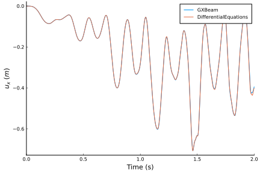 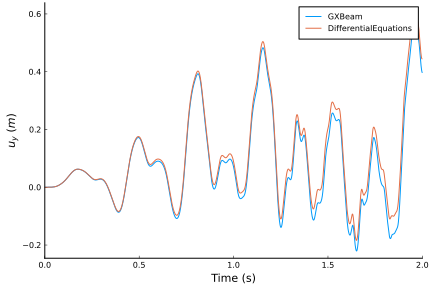 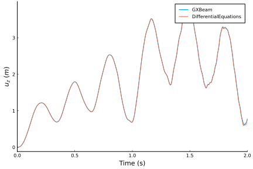 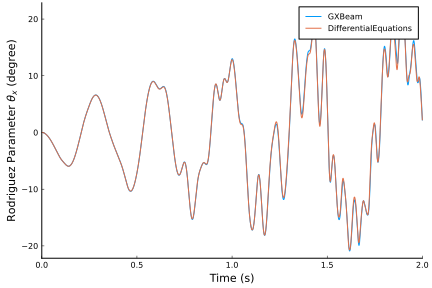 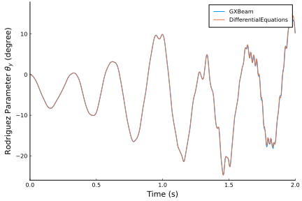 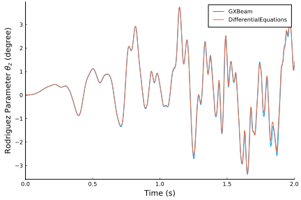 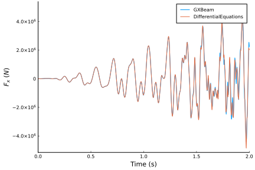 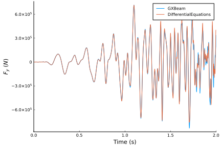 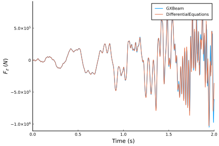 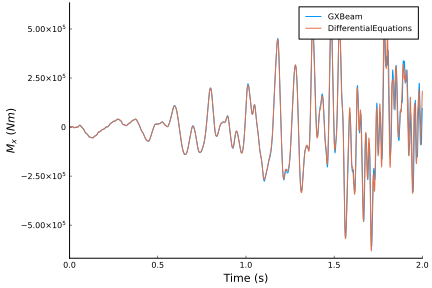 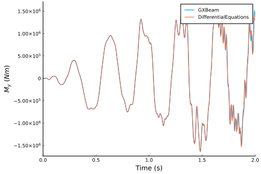 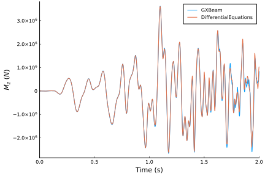
As can be seen, the solutions provided by GXBeam and DifferentialEquations track closely with each other.
root_chord = 1.9000
tip_chord = 0.4540
airfoil = [ # MH-104
1.00000000 0.00000000;
0.99619582 0.00017047;
0.98515158 0.00100213;
0.96764209 0.00285474;
0.94421447 0.00556001;
0.91510964 0.00906779;
0.88074158 0.01357364;
0.84177999 0.01916802;
0.79894110 0.02580144;
0.75297076 0.03334313;
0.70461763 0.04158593;
0.65461515 0.05026338;
0.60366461 0.05906756;
0.55242353 0.06766426;
0.50149950 0.07571157;
0.45144530 0.08287416;
0.40276150 0.08882939;
0.35589801 0.09329359;
0.31131449 0.09592864;
0.26917194 0.09626763;
0.22927064 0.09424396;
0.19167283 0.09023579;
0.15672257 0.08451656;
0.12469599 0.07727756;
0.09585870 0.06875796;
0.07046974 0.05918984;
0.04874337 0.04880096;
0.03081405 0.03786904;
0.01681379 0.02676332;
0.00687971 0.01592385;
0.00143518 0.00647946;
0.00053606 0.00370956;
0.00006572 0.00112514;
0.00001249 -0.00046881;
0.00023032 -0.00191488;
0.00079945 -0.00329201;
0.00170287 -0.00470585;
0.00354717 -0.00688469;
0.00592084 -0.00912202;
0.01810144 -0.01720842;
0.03471169 -0.02488211;
0.05589286 -0.03226730;
0.08132751 -0.03908459;
0.11073805 -0.04503763;
0.14391397 -0.04986836;
0.18067874 -0.05338180;
0.22089879 -0.05551392;
0.26433734 -0.05636585;
0.31062190 -0.05605816;
0.35933893 -0.05472399;
0.40999990 -0.05254383;
0.46204424 -0.04969990;
0.51483073 -0.04637175;
0.56767889 -0.04264894;
0.61998250 -0.03859653;
0.67114514 -0.03433153;
0.72054815 -0.02996944;
0.76758733 -0.02560890;
0.81168064 -0.02134397;
0.85227225 -0.01726049;
0.88883823 -0.01343567;
0.92088961 -0.00993849;
0.94797259 -0.00679919;
0.96977487 -0.00402321;
0.98607009 -0.00180118;
0.99640466 -0.00044469;
1.00000000 0.00000000;
]
sections = zeros(3, size(airfoil, 1), length(points))
for ip = 1:length(points)
chord = root_chord * (1 - x[ip]/L) + tip_chord * x[ip]/L
sections[1, :, ip] .= 0
sections[2, :, ip] .= chord .* (airfoil[:,1] .- 0.5)
sections[3, :, ip] .= chord .* airfoil[:,2]
end
write_vtk("dynamic-wind-turbine", assembly, gxbeam_history, sol.t; sections = sections)